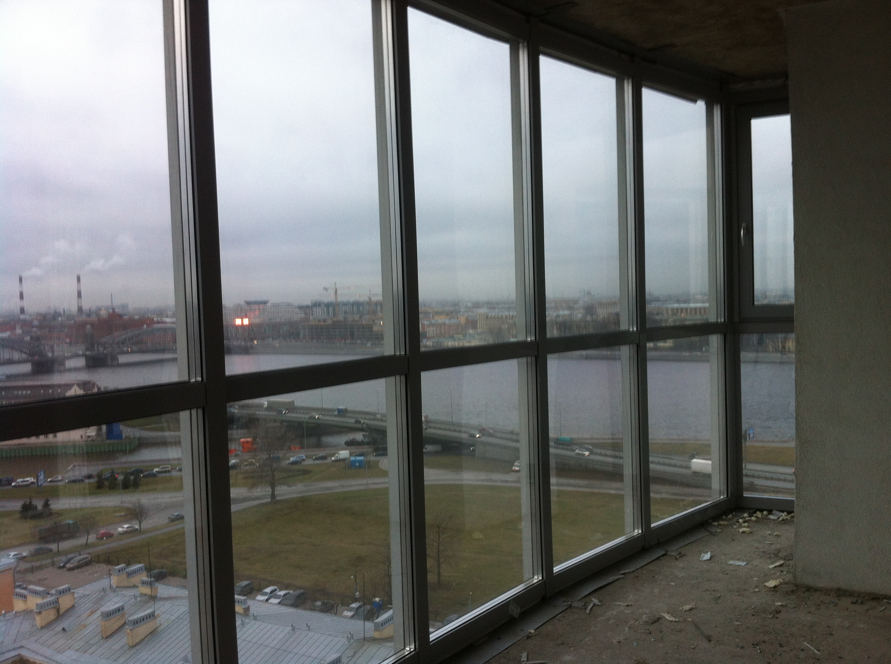

Любое современное жилье оснащено балконом. Для того чтобы увеличить полезные функции этого помещения проводится замена холодного остекления без изменения фасада здания. Очень часто такая замена связана:
- с переездом в новое жилье
- с появлением конденсата
- с улучшением освещения помещения
- с улучшением шумоизоляции
Замена холодного остекления без изменения фасада здания проводится с использованием стеклопакетов, оснащенных энергосберегающими стеклами. Главным преимуществом является то, что в результате такой замены фасад не меняет своего прежнего облика, потому как данный процесс, включает в себя подбор цвета створок непосредственно под цвет фасада. Также новое изделие будет оснащено функцией микропроветривания.
Грамотная замена холодного остекления без изменения фасада здания может проводится только профессионалами, которые смогут учесть все особенности и подберут самый идеальный вариант остекления для каждого конкретного случая в отдельности. В результате проведения таких работ балкон можно с легкостью использовать как дополнительное жилое помещение, которое будет иметь значительно лучшую теплоизоляцию и шумоизоляцию, что позволит сделать ваше время провождения комфортным и уютным.